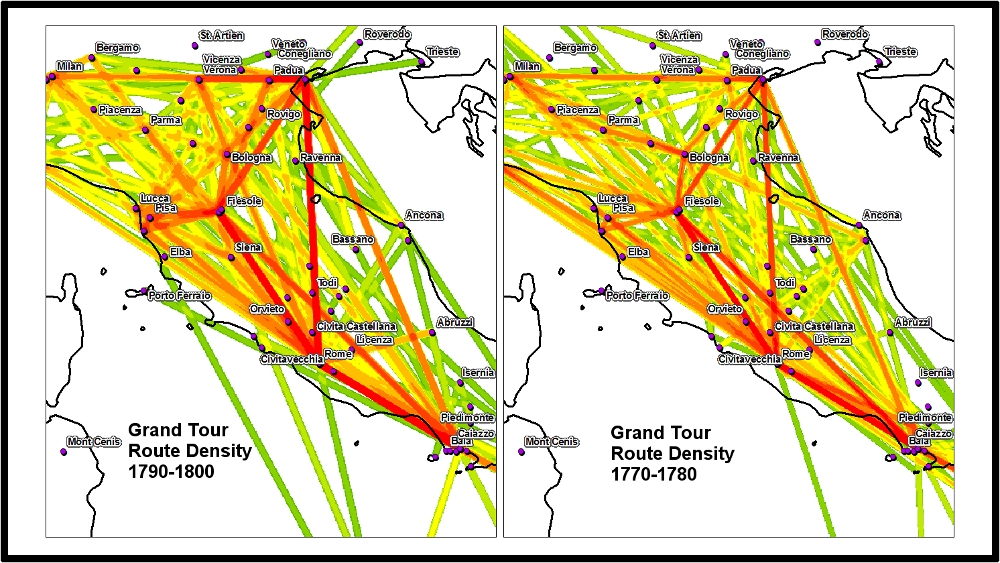
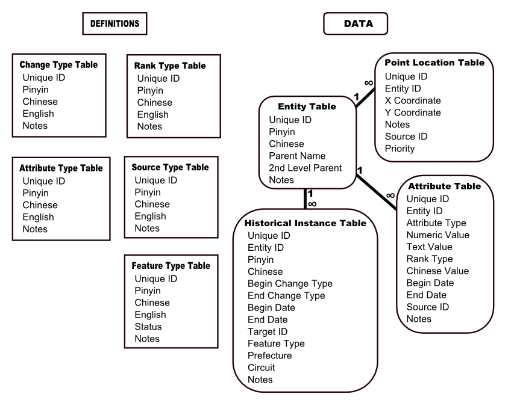
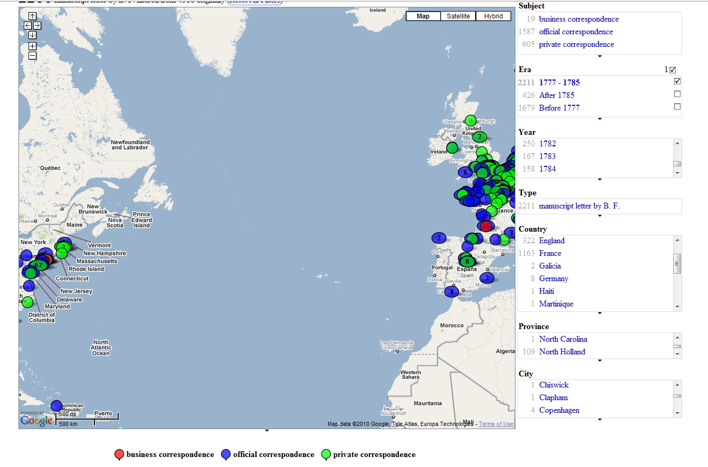

The term digital scholarly media can refer to one of many products created in academia to visualize, analyze or similarly treat with data and claims traditionally presented using linear, narrative text, typified by monographs and journal articles.


Compared to spatial analysis, though, text analysis is well-entrenched and supported in the humanities. Still, with the rising number of scanned and corrected books, along with the growing methodological maturity demonstrated at Stanford and other top research universities, there remains significant untapped potential in the area of text analysis.

These are only a few possible ways to conceive of scholarly digital media. The use of interactive environments or dynamic systems (similar to games) to explore complex, multi-part historical, philosophical or linguistic problems has yet to achieve notable success, but the growth of digital humanities centers around the world and the increasing amount of humanities scholarship directed toward repurposing entertainment software for serious games indicates this is likely to change. Along with the aforementioned well-established methods of utilizing digital means to ask traditional humanities questions, it’s obvious that the production of scholarly digital media can take many forms, limited only by the ambition of the scholar and the data available.
Peer Review
In their January 2010 report, “Assessing the Future Landscape of Scholarly Communication,” The Center for Studies in Higher Education detailed the difficulties of addressing peer review of new forms of scholarly communication as well as data sets that underlie the scholarship. This presents unique problems in developing a suitable pool of peer review talent that is both comfortable with scholarly claims within the domain of the research while at the same time harnessing technical talent capable of evaluating the software and data used to produce the research. It also highlights opportunities for scholars new to the digital humanities to establish themselves by focusing scholarly substance over visual flair.
While current academic success in the humanities relies on research presented in high-impact publications, there are growing avenues for the presentation of scholarly digital media, such as the Coordinates series from UC Press for GIS-oriented work, as well as the University of Michigan Press/HASTAC Publication Prize for Notable Work in the Digital Humanities for “critical and rigorous engagement in the field of Digital Humanities”. Identifying these venues in the formulation of prospective projects is a priority.
As top research universities and private entities begin to recognize digital scholarly media production, it seems likely that peer review will prove to be the avenue through which established research one institutions compete with established digital humanities centers. By positioning digital scholarly media production at Stanford within this new emphasis on peer review, nascent projects can change the game fundamentally and compare favorably with long-established projects that are larger but not as well documented or reviewed.